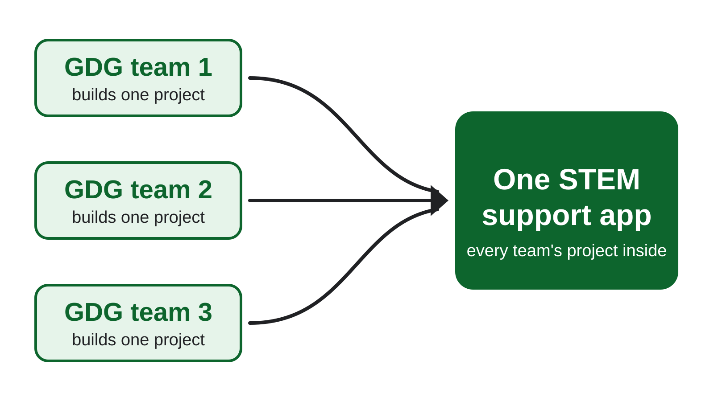

GDG on Campus Riverside City College is an independent group; our activities and the opinions expressed here should in no way be linked to Google, the corporation.
What DevFest is
DevFest is a one-day tech conference run by GDG chapters.
Talks from Googlers, hands-on coding workshops, and people in tech to meet.
At the Braille Institute, 741 N Vermont Ave, Los Angeles.
Get into GEAR · Google Cloud Career Launchpad
11hours
of hands-on Google Cloud and Gemini lessons on Google Skills, Google’s course site. Finish 90% by Nov 20 and you get invited to a career panel with Googlers.
Cutie Hack · Sat, Nov 21
A 12-hour beginner hackathon at UCR.
8 AM to 8 PM in Winston Chung Hall. Any major and any skill level. You don’t need to know how to code.
Professors asked us to build an app that helps RCC students in STEM.
You pick the subject and the app team you want to work on.
How we’d build it
Each team picks a subject and builds an app for it.
Then every team’s app goes into one STEM app for RCC students.

Diagram: GDG on Campus RCC
How a team works
Each team has the same roles as an app team at a tech company.
Pick the role you want to learn, on the subject you want to work on.
GDG on Campus Riverside City College is an independent group; our activities and the opinions expressed here should in no way be linked to Google, the corporation.